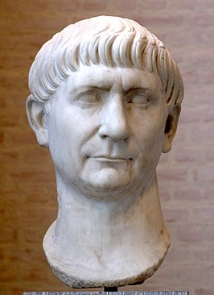
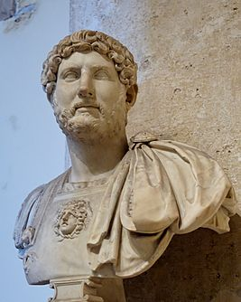
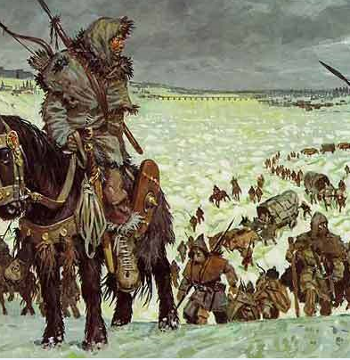
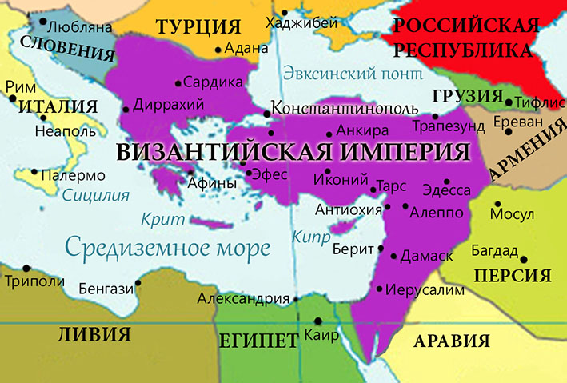
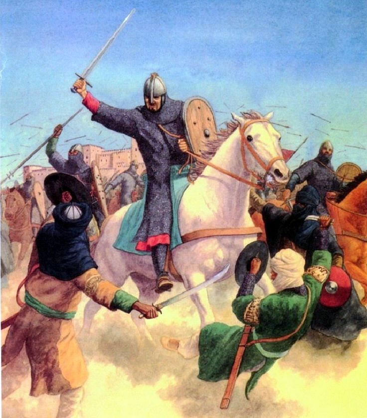
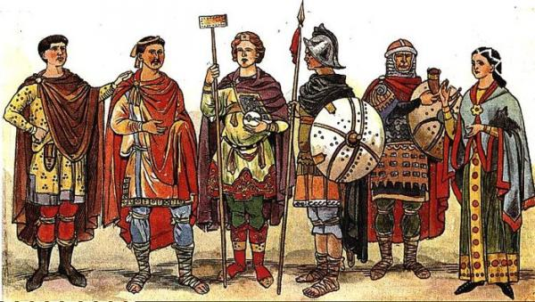
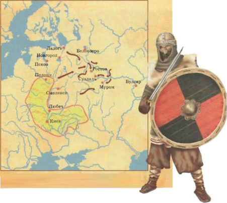
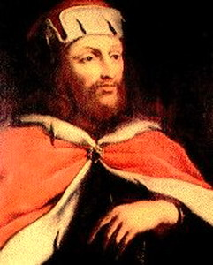

Раннее Средневековье — период европейской истории, начавшийся после падения Западной Римской империи. Длился около шести веков, приблизительно с 476 по 1100 год. В эпоху раннего Средневековья произошло Великое переселение народов, появились викинги, возникли королевства остготов в Италии и вестготов в Аквитании и на Пиренейском полуострове и образовалось Франкское государство, в период своего расцвета занимавшее большую часть Западной Европы. Северная Африка и Испания вошли в состав Арабского халифата, на Британских островах существовало множество небольших государств англов, саксов и кельтов, появились государства в Скандинавии, а также в центральной и восточной Европе: Великая Моравия и Древнерусское государство.
Начиная со II века н. э. могущество Римской империи пошло на убыль — постепенно пришли в упадок морская торговля и развитие городов, сократился прирост населения. В 150 году население империи равнялось приблизительно 65 миллионам человек, а к 400 году эта цифра уменьшилась до 50 миллионов. Вероятно, это было связано с изменением климата в Европе и снижением среднегодовых температур, что привело к потерям урожаев. Другие авторы связывают это с духовным и морально-нравственным упадком — жители империи стали предпочитать комфорт городской жизни, резко повысилось количество люмпена, институт семьи пребывал в кризисе, в результате чего прирост населения снизился. Со 2 века в Римской империи начался кризис. После успехов Марка Ульпия Нервы Траяна, в 117 году к власти пришёл Публий Элий Адриан. При нём империя потеряла Месопотамию.


В 3 веке начинаются столкновения римлян с германцами. Рим теряет Дакию, когда-то с трудом завоёванную Траяном. В 330 году император Константин переносит столицу в город на берегу Босфора. Он был основан в 7 веке до н. э. и назывался Византий. На его месте закладывается Константинополь (поэтически греч. город Константина или позднее просто Город, слав. Царьград, Цареград). Этот город был назван Новым Римом (но вскоре после смерти императора и до османского завоевания именовался Константинополем). В 395 году последний общеримский император Феодосий делит империю между двумя сыновьями — Аркадием и Гонорием. Императором Западной Римской империи с центром в Риме Становится 11-летний Гонорий, а императором Восточной Римской империи (Византийской, от «Византий», Византии, Ромейской, «Римской») с центром в Константинополе — 18-летний Аркадий. Первый Рим начинает терять свою важность и через некоторое время подвергается разграблению. Феодосий предпочитал жить в Медиолане, а с 402 г. столица Западной империи, постоянно подвергавшейся нашествиям варваров, переносится в небольшой, но хорошо укрепленный город-порт Равенна. В 410 году Рим подвергся нападению вестготов и был сильно разорён. В 455 году Рим был захвачен вандалами, другим германским племенем, которое к этому времени основало независимое государство в римской Северной Африке. Они не только разграбили город, но и уничтожили множество памятников архитектуры и искусства, которые не могли вывезти из Италии в Африку, поэтому их название стало нарицательным.
Окончательное падение Западной империи было инспирировано византийским императором Зеноном. 23 августа (4 сентября) 476 года в ходе очередной междоусобной войны полководец Одоакр захватил Рим, а 16-летний последний римский император Ромул Август (или Августул — маленький Август) был свергнут. С согласия Зенона Одоакр признал императором Запада предшественника Ромула Августула императора Юлия по прозвищу Непот («племянник», так как слабый Непот правил Западом как ставленник византийского императора, своего родственника; в наше время непотизмом называют занятие должностей благодаря родственным связям, кумовство). В 480 г. Непот был убит собственными телохранителями, а его корону отослали в Византию, после чего Зенон решил более западных императоров не назначать. Большинство учёных считают 476 г. началом Средневековья. Другие утверждают, что Средневековье началось в 313 году, когда в Римской империи были запрещены гонения на христиан, и христианство превратилось в господствующую религию.
Вели́кое переселе́ние наро́дов — условное название совокупности этнических перемещений в Европе в IV—VII веках, главным образом с периферии Римской империи на её территорию. Великое переселение можно рассматривать в качестве составной части глобальных миграционных процессов, охватывающих семь-восемь веков. Характерной особенностью переселения был тот факт, что ядро Западной Римской империи (включая в первую очередь Италию, Галлию, Испанию и отчасти Дакию), куда направилась в конечном счёте масса германских переселенцев, к началу V века нашей эры уже было достаточно плотно заселено самими римлянами и романизированными кельтскими народами. Поэтому великое переселение народов сопровождалось культурными, языковыми, а затем и религиозными конфликтами между германским и романизированным населениями. Великие переселения заложили основу противостояния между германскими и романскими народами, в каком-то смысле дошедшего и до наших дней. В переселении активно участвовали славянские народы, тюрки, иранцы (аланы) и финно-угорские племена.
Византи́йская импе́рия, Византи́я, Восточная Римская империя (395[2]—1453) — государство, оформившееся в 395 г. вследствие окончательного раздела Римской империи после смерти императора Феодосия I на западную и восточную части. Менее чем через восемьдесят лет после раздела, Западная Римская империя прекратила своё существование, оставив Византию исторической, культурной и цивилизационной преемницей Древнего Рима на протяжении почти десяти столетий истории поздней Античности и Средневековья[3][4]. Название «Византийская» Восточная Римская империя получила в трудах западноевропейских историков уже после своего падения, оно происходит от первоначального названия Константинополя — Виза́нтий, куда римский император Константин I перенес в 330 году столицу Римской империи, официально переименовав город в «Новый Рим»[5]. Сами византийцы называли себя римлянами — по-гречески «ромеями»[5], а свою державу — «Римской (Ромейской) империей» (на среднегреческом (византийском) языке — Βασιλεία Ῥωμαίων, Basileía Romaíon) или кратко «Романией» (Ῥωμανία, Romania). Западные источники на протяжении большей части византийской истории именовали её «Империей греков» из-за преобладания в ней греческого языка, эллинизированного населения и культуры. В Древней Руси Византию обычно называли «Греческим царством», а её столицу — Царьградом.
Арабское завоевание Испании произошло за довольно короткий период 711—714 годов, что было не удивительно, учитывая что за такой или даже меньший период времени арабы объединили Аравию в единое исламское государство (628—634), покорили Сирию (634—638), завоевали Египет (639—646) и т. д. Вестготское королевство пало. Сопротивление немногочисленных вестготов было сломлено, преобладающие иберо-римляне практически не оказали сопротивления завоевателям, а значительное еврейское меньшинство даже приветствовало его, надеясь таким образом, получить равные с христианами права. Магрибская династия Омейяды взяла власть в Иберии в свои руки, поддерживая доминантную роль ислама руками берберских наёмников. Лишь в Пиренейских горах сражались за независимость два небольших труднодоступных региона, которые населяли баски и романизированные астуры. Битва при Ковадонге (722), в которой христиане одержали первую победу, положила начало так называемой Реконкисте. Тем не менее, вплоть до 732 года арабы совершали набеги по всему югу Франции до реки Луара, пока не были разгромлены у Пуатье. Тем не менее, на завоёванных в Иберии землях образовалось исламское государство, пережившее целый ряд трансформаций и просуществовавшее до 1492 года.
Фра́нкское госуда́рство (короле́вство; фр. royaumes francs, лат. regnum (imperium) Francorum), реже Франкия лат. Francia — условное название государства в Западной и Центральной Европе c V по IX века, которое образовалось на территории Западной Римской империи одновременно с другими варварскими королевствами. Эта территория была населена франками начиная с III столетия. Вследствие непрерывных военных походов майордома франков Карла Мартелла, его сына Пипина Короткого, а также внука Карла Великого, территория империи франков к началу IX века достигла самых больших размеров в период своего существования. Вследствие традиции разделять наследство между сыновьями, территория франков только условно управлялась как единое государство, фактически она была разделена на несколько подчиненных королевств (regna). Количество и расположение королевств менялось с течением времени, и изначально Франкией называлось только одно королевство, а именно Австразия, располагавшееся в северной части Европы на реках Рейн и Маас; тем не менее, иногда в это понятие включали и королевство Нейстрия, находившееся севернее реки Луара и западнее реки Сена. С течением времени применение названия Франкия смещалось в направлении Парижа, установившись в результате над областью бассейна реки Сены, окружавшей Париж (в наши дни известной под именем Иль-де-Франс), и давшей своё имя всему королевству Франция.
Эпоха викингов охватывает период с 793 по 1066 гг. За два с половиной столетия этот народ во время военных рейдов и торговых путешествий исследовал значительную часть Европы, юго-запад Азии, север Африки и северо-восточное побережье Северной Америки. Викинги (дат. Viking, швед. Vikingar, норв. Vikingene) — раннесредневековые скандинавские[6] мореходы, в VIII—XI веках совершавшие морские походы от Винланда до Биармии и от Каспия до Северной Африки. В основной массе это были свободные крестьяне, жившие на территории современных Швеции, Дании и Норвегии, которых толкали за пределы родных стран перенаселение и жажда лёгкой наживы.[6] По религии — в подавляющем большинстве язычники. Шведские викинги, как правило, путешествовали на восток и фигурировали в древнерусских и византийских источниках под именем варягов.[6] Норвежские и датские викинги двигались в своём большинстве на запад и известны по латинским источникам под именем норманнов (лат. Normanni). Взгляд на викингов изнутри их общества дают скандинавские саги, однако подходить к этому источнику следует с осторожностью ввиду зачастую поздней даты их составления и записи.
Древнеру́сское госуда́рство, также Ки́евская Ру́сь (ст.‑слав. Рѹ́сь, греч. Ρωσία (Росия)[7], лат. Russia, Ruthenia, Ruscia, Ruzzia[8], др.-сканд. Garðar, Garðaríki[9]) — средневековое государство в Восточной Европе, возникшее в IX веке в результате объединения восточнославянских племён под властью князей династии Рюриковичей. Термин «Киевская Русь» является историографическим и был сформирован историками для обозначения эпохи в истории Руси, когда центр находился в Киеве.[10] В период наивысшего расцвета Древнерусское государство занимало территорию от Таманского полуострова на юге, Днестра и верховьев Вислы на западе до верховьев Северной Двины на севере. К середине XII века вступило в состояние раздробленности и фактически распалось на полтора десятка отдельных русских княжеств, управляемых разными ветвями Рюриковичей. Вплоть до монгольского нашествия (1237—1240) Киев формально продолжал считаться главным столом Руси, а Киевское княжество оставалось в коллективном владении русских князей.
Священная Римская империя (с 1512 года — Священная Римская империя германской нации; лат. Sacrum Imperium Romanum Nationis Germanicæ или Sacrum Imperium Romanum Nationis Teutonicæ, нем. Heiliges Römisches Reich Deutscher Nation), в старинных русских источниках также царство Римское, Цезария и так далее — государственное образование, существовавшее с 962 по 1806 годы и объединявшее многие территории Европы. В период наивысшего расцвета в состав империи входили Германия, являвшаяся её ядром, северная и средняя Италия, Нидерланды, Чехия, а также некоторые регионы Франции. С 1134 года формально состояло из трёх королевств: Германии, Италии и Бургундии. С 1135 года в состав империи вошло королевство Чехия, официальный статус которого в составе империи был окончательно урегулирован в 1212 году. Империя была основана в 962 году восточно-франкским королём Оттоном I Великим и рассматривалась как прямое продолжение античной Римской империи и франкской империи Карла Великого. Процессы становления единого государства в империи за всю историю её существования так и не были завершены, и она оставалась децентрализованным образованием со сложной феодальной иерархической структурой, объединявшей несколько сотен территориально-государственных образований. Во главе империи стоял император. Императорский титул не был наследственным, а присваивался по итогам избрания коллегией курфюрстов. Власть императора никогда не была абсолютной и ограничивалась высшей аристократией Германии, а с конца XV века — рейхстагом, представлявшим интересы основных сословий империи.

В ранний период своего существования империя имела характер феодально-теократического государства, а императоры претендовали на высшую власть в христианском мире. Усиление папского престола и многовековая борьба за обладание Италией при одновременном росте могущества территориальных князей в Германии значительно ослабили центральную власть в империи. В период позднего Средневековья возобладали тенденции дезинтеграции, угрожающие превратить Священную Римскую империю в конгломерат полунезависимых образований. Однако осуществлённая в конце XV — начале XVI века «имперская реформа» позволила укрепить единство страны и сформировать новый баланс власти между императором и сословиями, позволившей империи относительно успешно конкурировать с национальными государствами Западной Европы. Кризис Реформации и Тридцатилетней войны был преодолён ценой дальнейшего ограничения власти императора и превращением общесословного рейхстага в главный элемент имперской конструкции. Империя нового времени обеспечивала сосуществование нескольких конфессий в рамках единого государства и сохранение самостоятельности её субъектов, а также защиту традиционных прав и привилегий сословий, однако потеряла способность к экспансии, усилению центральной власти и ведению наступательных войн. Развитие крупных немецких княжеств по пути внутренней консолидации и становления собственной государственности входило в противоречие с застывшей имперской структурой, что в XVIII веке привело к параличу центральных институтов и развалу имперской системы. Священная Римская империя формально просуществовала до 1806 года и была ликвидирована в ходе наполеоновских войн, когда по решению Наполеона был сформирован вассальный Франции Рейнский союз. Последний император Франц II, не имевший, как и его ближайшие предшественники, никакой реальной власти над германскими государствами, отрёкся от престижного, но давно ставшего «виртуальным» престола, сохранив за собой реальный, австрийский престол.
middle@ages.com
+1 232 54 48